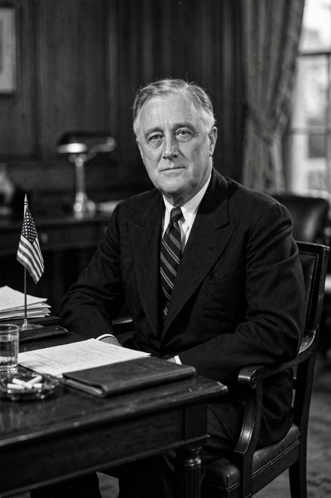

Twenty-second Amendment to the United States Constitution

The Twenty-second Amendment to the United States Constitution limits the number of times a person can be elected to the office of President of the United States to two, and sets additional eligibility conditions for presidents who succeed to the office. Congress approved the amendment on 21 March 1947 and it was ratified by the states on 27 February 1951.
Text
No person shall be elected to the office of the President more than twice, and no person who has held the office of President, or acted as President, for more than two years of a term to which some other person was elected President shall be elected to the office of the President more than once.
Background
George Washington set an informal precedent by retiring after two terms, and the two-term tradition held for over a century: Ulysses S. Grant and Theodore Roosevelt sought third terms unsuccessfully. Franklin D. Roosevelt broke the tradition, winning third and fourth terms in 1940 and 1944 during the Great Depression and the Second World War. After his death in 1945, the Republican-controlled 80th Congress proposed a constitutional amendment to make the limit binding.
Effect and debates
Harry Truman, president at ratification, was expressly grandfathered and briefly considered another run in 1952. Since then, several presidents (including Dwight D. Eisenhower, Ronald Reagan, Bill Clinton and Barack Obama) have been barred from seeking a third elected term. Repeal proposals are introduced periodically; critics argue the limit weakens second-term presidents (the "lame duck" effect) and restricts voter choice, while defenders argue it prevents excessive concentration of power.
See also: President of the United States, Term limit, Franklin D. Roosevelt.